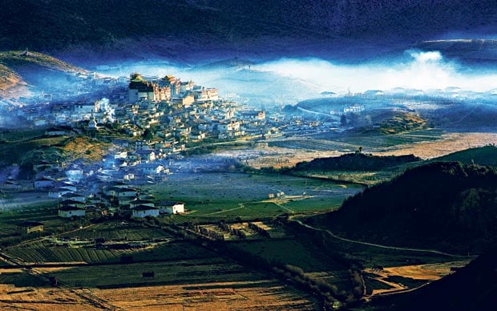

24 February 2013
Shangri-La, China: paradise found
Teresa Levonian Cole
"We drove through the snow-capped mountains and valleys into ever-remoter areas of Yunnan Province, the 21st century receeding until we reached our destination"
The boatman sat on the shore of Lake Erhai in an embroidered velvet waistcoat, sucking at what looked like a contrabassoon through a mouth glinting with silver teeth. Reluctantly, he exchanged his pipe for oars and ushered us onto his canoe to visit a Bai couple on the lake who would be demonstrating the art of fishing with cormorants.
Twenty birds manned the gunwales of their boat, wings spread out to dry. Another solitary bird perched on the prow watching the old woman row. At a sign from the fisherman, the birds dived into the water to emerge with their wriggling catch.
"The birds wear a ring around their neck that prevents them swallowing the larger fish," explained my guide, Lisa. "Then the fisherman rewards them with small fry."
Most of China's Bai people live in and around the city of Dali, squeezed between the lake and the Cangshan Mountains. The city lies about six hours from the industrial sprawl of Kunming, reached on a drive through fields of rice and tobacco, and hamlets where long strands of corn cobs and scarlet chillies hang like bunting from the houses. In the fields, farmers toil with pitchforks and wooden shares, and spread corn in the streets to be threshed by passing vehicles.
Over the next 10 days, as we drove through the snow-capped mountains and valleys into ever-remoter areas of Yunnan Province, the 21st century would recede even further until we reached our destination: a land dubbed by the Chinese, keen to promote the region, as a location for the fabled Shangri-La.
Until the road was built in the Fifties, people travelled along the ancient caravan routes through Yunnan, the market towns en route prospering from trade. Dali was one of these, a city older than Beijing, founded in 1382 at the junction of the South Silk Road and the Tea Horse Road. Today, rebuilt after an earthquake in 1925, it relies on domestic tourism.
Of more authentic appeal is the nearby town of Xizhou, whose weekly market attracts a colourful mix of minority peoples: the "white" Bai, whose marriageable girls wear colourful aprons and elaborate headdresses with long white tassels, the Muslim Hui, and the exotically attired Yi, who descend from the mountains on horseback.
Here, along with pigs' snouts, ducks' heads and chickens' feet, you can find a bewildering array of vegetables and fungi, live lake fish, sackloads of salted shrimp, blocks of dry bean jelly, cones of cane sugar, dates and rape seed oil pressed on site.
Passing "Yellow Tooth City" – so called for the sulphur springs from which the locals drink – along the Old Tibet Road, we arrived in Shaxi, a market town of renown since the third century BC, and one which – thanks to sensitive restoration – has retained the charm of its Ming Dynasty heritage. Around its large central cobbled square stands the 1415 Xingjiao Temple, which once catered equally for Bai, Taoists, Buddhists and visiting Muslim merchants. Beautiful multi-eaved courtyard houses of wood and adobe washed with lime abound, a rock at their entrance indicating that these were once caravan guesthouses, while the defaced decoration on the outer walls is testament to the Red Army's long reach.
I wished I'd had longer in Shaxi to explore an ancient Tea Horse trail to the old customs post of Mapingguan, famous for its nearby salt wells, and to ride into Yi mountain villages – and perhaps a little less in the more famous town of Lijiang, my next stop.
Lijiang is a Unesco World Heritage Site surrounded by lakes and orchards of apples and winter peaches. But unlike its quiet neighbouring villages – Yufu, with its clip-clopping horses and rough stone houses protected by clay rooftop cats; and Baisha, where I had the frescoes of Dabaoji Temple to myself – Lijiang itself is overrun by visitors. More than eight million, in the first half of last year, came to marvel at the Old Town's quaint canals, spanned by 300 bridges and bordered by weeping willows and "old" wooden houses (actually rebuilt after the devastating earthquake of 1996). The commercialism is relentless – even the Naxi horsemen, parading in shaggy jackets, and women in traditional embroidered sheepskin capes, have been summoned to entertain the crowds. But venture beyond the shops and bars into the local market, and real life reasserts itself, among vendors of copperware and pu'er teas, and birdmen trading falcons and fearsome golden eagles.
The old road that snakes along the Yangtze River and through the mountains to Shangri-La was an unforgettable highlight. Passing the first bend of the Yangtze where, in 1252, Kublai Khan's Mongol army crossed to defeat the Dali Kingdom, and pausing to admire the churning waters of Tiger Leaping Gorge (3,000 visitors a day), we soon entered an enchanted world.
Climbing high above the silvery river and into the forested Habashan Mountains, each curve revealed a breathtaking vista of yellows, greens and oranges against the purple mountains. We passed remote Yi villages, stopped to buy bags of pears and walnuts at roadside stalls, and climbed to Baishui Tai – an astonishing series of white limestone pools of turquoise water that cascade like a sculpture down the mountain. Sacred to the Naxi, and said to be the birthplace of the Dongba religion, it is a site we shared with a solitary Naxi family, their young daughter cloaked in traditional finery.
With a kaleidoscopic shift, we were suddenly in "Little Tibet", emerging from pine forests onto a high plateau and the "county" of Shangri-La, whose population is 82 per cent Tibetan. Distinctive Tibetan farmhouses appeared, with sloping walls, elaborately painted beams and shingle roofs weighed down by stones, where families live above their livestock. In the golden fields, barley and turnips dried on distinctive wooden racks and women balanced large wicker threshing baskets on their heads.
The old town of Shangri-La is beautifully preserved, but the real delight of the region lies in its countryside. "The name was changed from Zhongdian in 2001," said Sonam, my guide. "After James Hilton's book, every town wanted to be renamed Shangri-La. But after 17 visits and petitions by our governor to Beijing, we won."
The Banyan Tree, on the edge of a village in rural nowhere, could not be more auspiciously located. It lies at the foot of the Ringha Monastery, where prayer flags flutter, boy-monks chop firewood and tend the butter lamps and the views extend over the Shudugang River to fields of grazing yaks.
A troop of gentle, stocky horses appeared outside my lodge in the watery light of dawn one morning, a thin layer of frost shimmering on their back; another day, it was a drift of black pigs that escaped from the village to materialise from the rising mist. The scene was heavenly.
I was fortunate to have Ama as my escort on a "cultural hike" organised by the hotel. Paths were lined with rhododendron and azalea, the mountains carpeted in pine, larch, spruce and aspen, the only sounds those of birds and cattle bells. "A typical Tibetan house has 1,200 hand-carved roof tiles," she explained, as we visited a village. Married at 14, and now a youthful 48, Ama is pure Tibetan. "Love is not considered important," she told me as we sat around a stove in a village house eating fresh-baked bread and yak's cheese sprinkled with sugar. "Life is hard, and couples are too busy working to fight!" While Ama told me about Tibetan customs, our hostess prepared butter tea: boiling black leaves with water, and churning it with yak's butter and salt in a wooden cylinder. The autumn weather had turned cold, and the tea tasted surprisingly good.
I noticed a photograph of Mao and his generals on the wall, juxtaposed with a poster depicting the Potala Palace in Lhasa. The one subject here of which no one may speak, of course, is Tibet itself. It was a salutary reminder that, even in the earthly utopia of Shangri-La, the line between politics and religion must be balanced with the funambulist's skill.
(from: https://www.telegraph.co.uk/travel/destinations/asia/china/articles/Shangri-La-China-paradise-found/)